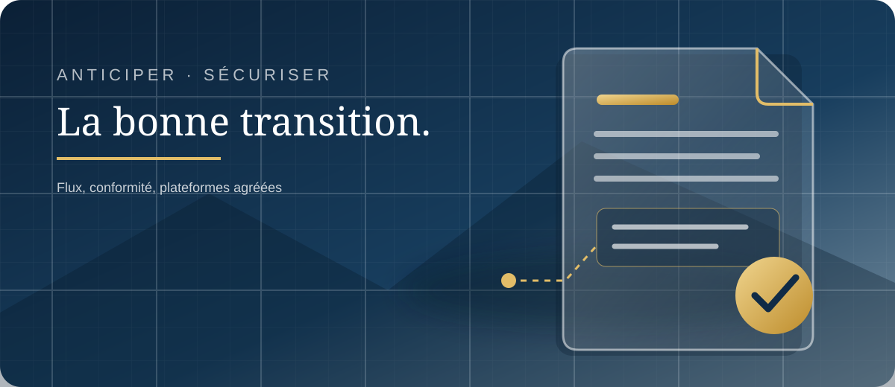

1. Faire le point
Identifier votre taille d'entreprise, vos flux de facturation, vos clients, vos fournisseurs et les logiciels que vous utilisez déjà.
ACCOMPAGNEMENT MAJESTIOS · GESTION & DÉMATÉRIALISATION

Vérifiez vos obligations et préparez vos outils. Les entreprises assujetties à la TVA, y compris les petites structures et les micro-entrepreneurs en franchise en base, sont concernées selon leur activité et leurs opérations.
Un PDF ordinaire envoyé par e-mail ne suffit pas. La facture électronique réglementaire doit comporter des données structurées et circuler par l'intermédiaire d'une plateforme agréée. Un logiciel de facturation seul ne garantit donc pas votre conformité.
Votre première démarche : identifiez vos obligations, vérifiez la compatibilité de vos outils, choisissez une plateforme agréée adaptée et préparez vos données ainsi que vos procédures internes.
Évaluer ce que la réforme change pour votre entreprise — simulateur officiel ↗
Depuis le 1er septembre 2026, toutes les entreprises assujetties à la TVA doivent être en capacité de recevoir les factures électroniques de leurs fournisseurs lorsque ceux-ci sont soumis à l’obligation d’émission. Les grandes entreprises et les entreprises de taille intermédiaire doivent également émettre leurs factures au format électronique et respecter les obligations d’e-reporting applicables.
Pour les PME et micro-entreprises, l’obligation d’émission des factures électroniques et les obligations d’e-reporting correspondantes entrent en vigueur au 1er septembre 2027. Cela ne reporte pas leur obligation de se préparer à recevoir des factures électroniques, déjà applicable depuis septembre 2026.
Le calendrier général ne suffit pas à déterminer toutes vos obligations : le champ de la réforme dépend notamment de la nature de vos clients, de vos opérations et de votre situation au regard de la TVA. Faites vérifier votre cas à partir des informations officielles.
Identifier votre taille d'entreprise, vos flux de facturation, vos clients, vos fournisseurs et les logiciels que vous utilisez déjà.
Vérifier la compatibilité de votre logiciel et choisir une ou plusieurs plateformes agréées selon les flux à traiter.
Fiabiliser les données, les références clients, les circuits de validation et le suivi des statuts, rejets et règlements.
La plateforme agréée assure les fonctions réglementaires de transmission et de réception des factures électroniques et, selon les flux concernés, la transmission des données de transaction et de paiement à l'administration.
Un logiciel de gestion ou une solution compatible qui n'est pas immatriculé comme plateforme agréée ne remplace pas cette dernière. Il doit être relié à une plateforme agréée pour les échanges réglementaires concernés.
À retenir : un simple PDF envoyé par e-mail ne constitue pas, à lui seul, une facture électronique conforme au dispositif.
MajestiOS n'est pas une plateforme agréée. L'architecture étudiée consiste à proposer un accompagnement et, à terme, un module de gestion connecté à une plateforme agréée partenaire. Aucun partenaire ni connecteur n'est sélectionné ou déclaré opérationnel à ce stade.
Comprendre le rôle des plateformes agréées sur impots.gouv.fr ↗
Vous pourrez conserver votre CRM ou votre logiciel de facturation actuel lorsque sa compatibilité et les possibilités de connexion le permettent. Si vous le souhaitez, le futur CRM MajestiOS pourra réunir progressivement le suivi commercial, les devis, les interventions, les factures et l'accompagnement.
Le parcours cible prévoit un module MajestiOS Facturation et une couche MajestiOS Connect pour relier les logiciels et plateformes partenaires. Les connexions directes dépendront des API, des contrats et des tests de chaque éditeur ou plateforme.
État actuel : cette thématique est en cours de conception et de cadrage fonctionnel dans Evolution-9. Le module de facturation, les connecteurs vers les plateformes agréées et le CRM client ne sont pas encore disponibles en production. Cette page présente le parcours envisagé, pas un service déjà activé.
Calendrier de la réforme — impots.gouv.fr ↗
Émettre, recevoir et transmettre les données — impots.gouv.fr ↗
Un PDF envoyé par e-mail est-il une facture électronique ? — impots.gouv.fr ↗